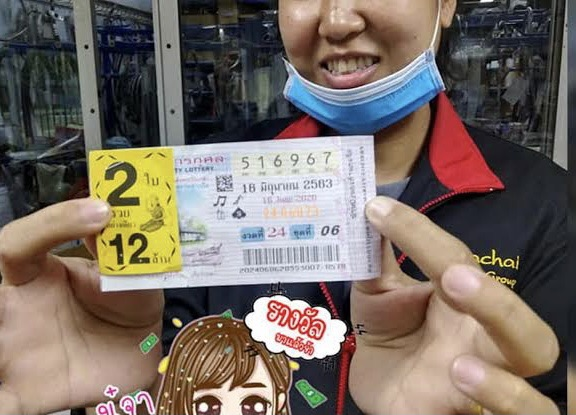

ราคาใหม่
990 ฿ตามความต้องการยอดนิยมจากผู้อ่านของเรา ฉบับพิเศษ - สัมภาษณ์คนดังที่อ้างว่ารวยเพราะเครื่องรางมหัศจรรย์!
สวัสดีทุกๆคนค่ะ!
วันนี้อยากจะมาแบ่งปันเรื่องราวที่แปลกประหลาดมากกับทุกคนค่ะ เพิ่งเกิดขึ้นกับดิฉันเมื่อไม่นานมานี้เองค่ะ
ขอบอกก่อนเลยค่ะว่า ดิฉันเป็นคนที่สงสัยคนที่เชื่อเรื่องทำนายดวงชะตาแล้วก็พวกเรื่องอื่นๆที่ไม่สามารถอธิบายได้มากๆเลยค่ะ แล้วปกติก็คือหัวเราะเยาะตลอด เวลาเห็นคนซื้อพวกเครื่องรางหรือทำพิธีกรรมต่างๆเพื่อหวังเรื่องโชคเรื่องเงินหรือว่าความรัก ดิฉันคิดอยู่เสมอค่ะว่าเรื่องพวกนี้มันไม่ได้ผลและไม่ได้ช่วยอะไรด้วย ทั้งยังเสียเงินแล้วก็เวลา ดังนั้นอย่าก็คิดเลยค่ะว่าดิฉันจะเชื่อเรื่องแบบนี้ แต่หลังจากนี้คุณจะเข้าใจว่าทำไมดิฉันถึงพูดเรื่องนี้ ขอเริ่มเรื่องตัวเองเลยแล้วกันนะคะ น่าเสียดายที่ตลอดชีวิตของดิฉัน ต้องทำงานหนักและรายได้น้อย ดิฉันเก็บเงินทุกบาททุกสตางค์แล้วก็ไม่ได้ใช้จ่ายฟุ่มเฟือยเลย และแน่นอนค่ะว่าดิฉันต้องการรายได้มากขึ้นและมีชีวิตดีๆ เช่นเดียวกับคนอื่นๆ แต่มันก็ไม่ได้แบบที่ใจต้องการไม่ว่าจะพยายามมากแค่ไหนก็ตาม ฉันอายุ 63 ปี และยังมีเงินไม่พอใช้ในชีวิตประจำวันหรือมีรายได้ที่มั่นคงอีกด้วย มันเศร้ามาก! ตอนเด็กๆ ฉันคิดว่าตัวเองจะมีเงินมีทองอยู่สบาย ๆ ตอนอายุ 30 แต่ความเป็นจริงนั้นโหดร้าย
สองสามปีที่ผ่านมา ดิฉันทำงานเป็นแคชเชียร์ที่โลตัสค่ะ ตอนทำงานก็ได้เจอลูกค้าแปลกๆหลายแบบเลยค่ะ ทั้ง ตลก, งี่เง่า, น่ากลัว มีเรื่องเยอะแยะมากมายเลย แต่มีหนึ่งในลูกค้าแปลกๆเหล่านี้ที่เปลี่ยนชีวิตของดิฉันไปเลยค่ะ ...
มันเป็นวันธรรมดาๆวันนึงค่ะ ตอนกลางวันลูกค้าไม่เยอะเท่าไร มีผู้หญิงหน้าตาดีคนหนึ่งมาคิดเงินที่ช่องของดิฉัน เธอก็ซื้อของทั่วไปแหละค่ะ อย่างเช่น นม ขนมแล้วก็ผลไม้ ผู้หญิงคนนี้มีออร่าของคนดีส่องออกมาเลยล่ะค่ะ พอถึงเวลาจ่ายเงินเธอก็ยื่นเงินมา 300 บาทแล้วพูดว่า "ขอบคุณนะคะ ไม่ต้องทอนค่ะ" ราคาของที่ซื้อคือ 122 บาท มันทำให้ดิฉันประหลาดใจมากจริงๆค่ะ
2 วันต่อมา ดิฉันเจอผู้หญิงคนนี้อีกครั้งนึงค่ะ เธอก็มาคิดเงินที่ช่องของดิฉัน แต่รอบนี้ ดิฉันเห็นในมือเธอมีแค่เครื่องรางชิ้นเล็กๆเท่านั้นค่ะ คุณคิดว่ายังไงคะ? และใช่ค่ะเธอยื่นเงินให้ 500 บาท ไม่รับตังค์ทอนและเดินจากไปแบบเงียบๆ
ตอนพักเที่ยงดิฉันก็เล่าเรื่องผู้หญิงแปลกๆคนนี้ให้พนักงานคนอื่นฟัง แล้วก็ได้รู้ว่า เธอคนนี้ไม่ได้จ่ายเงินแบงค์ใหญ่แล้วไม่เอาเงินทอนกับดิฉันเพียงแค่คนเดียว ดิฉันสงสัยมากค่ะว่าทำไมเธอถึงไม่เอาเงินทอน? คนรวยปกติจะโลภมากแล้วก็ขี้เหนียวกับเงินทุกบาทนี่คะ
เรื่องนี้อยู่ในความคิดดิฉันตลอดเลยค่ะ มันเป็นเรื่องที่ผิดปกติมากๆ หลังจากนั้นไม่นานคำถามของดิฉันก็ได้รับคำตอบค่ะ
ครั้งหนึ่ง ดิฉันรู้สึกปวดหัวมากในระหว่างทำงานเลยขอไปพัก อยากสูดอากาศบริสุทธิ์เลยออกไปยืนตรงถนนด้านนอกทางเข้าของห้างค่ะ
ตอนยืนอยู่ก็เห็นผู้หญิงคนนี้แหละค่ะเดินออกจากห้าง ดิฉันคิดว่าจะพลาดช่วงเวลานี้ไปไม่ได้เพราะรู้สึกทึ่งกับเรื่องตอนนั้นมากๆ ดิฉันถามคำถามกับเธอตรงๆแบบไม่ลังเลเลยค่ะ
- สวัสดีค่ะ! ขอถามหน่อยได้ไหมคะว่า ทำไมคุณถึงไม่เคยรับเงินทอนเลยล่ะคะ แบบที่คุณเคยให้ดิฉันก็ประมานสองสามร้อยบาทแล้ว อย่าหาว่าดิฉันยุ่งเลยนะคะ แต่คุณมีทำงานแล้วมีรายได้มากขนาดนี้จริงๆเหรอคะ?
- หวัดดีจ่ะ เธออยากได้เงินอีกหรอจ้ะ? ฉันให้ได้อีกนะ!
ผู้หญิงคนนั้นตอบแบบไม่ลังเลเลยค่ะ จริงๆแล้วในตอนนั้นดิฉันคิดว่าเธอน่าจะเป็นโรคประสาทอะไรสักอย่าง แต่เธอคนนี้ก็ดูค่อนข้างปกติดี แล้วดิฉันก็ถามต่อค่ะ
- ทำไมคุณถึงใจดีกับคนแปลกหน้าขนาดนี้ล่ะคะ? คุณปล้นธนาคารมาแล้วตอนนี้ก็รู้สึกผิดอะไรแบบนี้หรอคะ?
ดิฉันถามไปเล่นๆ แล้วผู้หญิงคนนั้นหัวเราะออกมาอย่างจริงใจ
- ไม่ใช่แบบนั้นเลยค่ะ เมื่อไม่กี่เดือนที่ผ่านมาฉันก็เป็นแบบเดียวกับคุณนี่แหละค่ะทำงานเป็นแคชเชียร์ที่ปั้มน้ำมัน รู้ดีค่ะว่างานหนักขนาดนี้แต่ให้เงินเดือนเท่าไร เลยตัดสินใจว่าตอนนี้ฉันมีโอกาสแล้วทำไมถึงจะไม่ช่วยล่ะ
- ขอโทษด้วยค่ะถ้าดิฉันยุ่งมากเกินไป แต่ช่วยบอกได้ไหมคะว่าคุณกลายมาเป็นแบบนี้ได้ยังไง ถ้าเมื่อก่อนคุณก็เคยทำงานเป็นแคชเชียร์ด้วยเหมือนกัน? หรือว่าคุณได้สามีรวยเหรอคะ?
- ไม่มีได้มีสามีรวยหรอกค่ะ แต่นี่คือพอดีดิฉันจัดการทุกอย่างได้แบบง่ายๆเลยค่ะ ...
- งั้นช่วยบอกหน่อยได้ไหมคะ อย่าพูดเป็นปริศนาแบบนี้เลย
-ได้ค่ะ แต่ขอบอกก่อนนะคะว่ามันยากที่จะเชื่อ
จากนั้นเธอก็เริ่มพูดถึงเครื่องรางหนึ่งแบบยาวๆเลยค่ะ บอกว่าเครื่องรางพวกนี้มีมาตั้งแต่เมื่อ 3,000 กว่าปีก่อนและตอนนี้เป็นเครื่องรางของขลังที่สำคัญที่สุดของทิเบต
- มีคนจำนวนมากอยากได้เครื่องรางพวกนี้ บางคนก็มีเงินไม่พอ บางคนก็กำลังมองหาความรัก ถ้าอยากให้ฝันเป็นจริงคุณต้องอธิฐานและต้องดูแลด้วยพลังงานที่ดีซึ่งจะแผ่ออกมาจากเครื่องรางนี้ค่ะ อันนี้ของดิฉันมันเวิร์คนะคะ เห็นได้ชัดว่าตอนนี้เงินสำคัญกับดิฉันมากกว่าเรื่องสามีซะอีก ดิฉันก็ไปเอาเครื่องรางนี้ตามคำแนะนำ คนรู้จักก็เอามันแขวนไวก้กับตัวค่ะ เธอพอใจมาก! ดิฉันยังข้องใจอยู่เลยค่ะ เธอบอกเว็บไซต์ที่สั่งซื้อเครื่องรางตัวนี้มาให้ด้วย
- นี่เรื่องจริงหรอคะเนี่ย? มันคือเครื่องรางอะไรกันที่เรียกเงินมาให้เราได้?
- จริงคะ ถ้าคุณอยากได้ ดิฉันจะให้ลิงค์ที่คุณสามารถสั่งซื้อเครื่องรางนี้ให้ค่ะ คุณจะเข้าใจเองค่ะ ถ้าคุณตัดสินใจได้แล้ว
เธอหยิบโทรศัพท์ออกจากกระเป๋าของเพื่อหาลิงค์นั้นให้ สักพักเธอก็โชว์ร้านค้าออนไลน์ร้านนึงให้ดูแล้วบอกให้ถ่ายรูปหน้าจอไว้ จะได้หาซื้อเครื่องรางนี้ได้ในตอนหลัง
นี่มันเป็นเรื่องล้อเล่นหรือเปล่าคะเนี่ย?
- ไม่ใช่ค่ะ ต้องลองนะคะ คุณจะไม่เสียใจแน่นอนค่ะ
เธอรอจนกระทั่งดิฉันถ่ายรูปเสร็จแล้วก็เดินจากไป
ดิฉันคิดว่าทั้งหมดนี้เป็นเรื่องไร้สาระซะมากกว่า แต่เธอคือใช้เงินแบบไม่คิดเลยจริงๆ แล้วอีกอย่างนี่มันคือเรื่องที่ไม่ตลกแล้วค่ะ พอถึงบ้านเลยลองเข้าเว็บไซต์นี้ดู ถึงแม้ว่าเครื่องรางพวกนี้จะดูน่าสนใจมากและราคาก็ไม่แพงด้วย แต่ดิฉันก็ยังสงสัยอยู่ดีค่ะ ในตอนท้ายของเว็บไซต์เห็นว่าเครื่องรางนี้มีส่วนลดตั้งแต่ 50% เลยค่ แต่เพราะดิฉันยังลังเลอยู่ว่าจะซื้อดีไหม เลยตัดสินใจด้วยตัวเองว่า จะซื้อเฉพาะที่ได้ส่วนลด 50% เท่านั้น เลยกดปุ่มแล้วได้รางวัลส่วนลด 50% จริงๆด้วยค่ะ เอาล่ะนี่คงจะเป็นสัญญาณ ของโชคชะตาที่บอกว่าจะต้องซื้อแน่ๆเลย ดิฉันเลยตัดสินใจสั่งซื้อเครื่องรางนี้ค่ะ
ขั้นตอนการสั่งซื้อคือง่ายมากๆค่ะ ดีใจมาก ของมาส่งค่อนข้างเร็วด้วยค่ะ เครื่องรางมีลักษณะดังนี้ค่ะ
เริ่มใส่เครื่องรางนี้วันแรก วันที่สอง วันที่สาม ...
ดิฉันเริ่มสังเกตเห็นความเปลี่ยนแปลงหลังจากหนึ่งสัปดาห์ค่ะ เริ่มมีตัวตนในที่ทำทำงานค่ะแล้วก็ได้รางวัล หลังจากนั้นไม่นานก็เลื่อนตำแหน่งเป็นผู้ดูแลระบบได้เพิ่มเงินเดือนด้วยค่ะ หลังจากนั้นเลยตัดสินใจจะลองเสี่ยงโชคของตัวเองดูเลยซื้อลอตเตอรี แล้วก็เป็นครั้งแรกในชีวิตเลยค่ะที่ถูกหวยแม้จะเป็นจำนวนเงินไม่มาก แต่ก็คือนับว่าถูกใช่ไหมละคะ
การเปลี่ยนแปลงยังไม่ได้จบแค่นี้นะคะ หลังจากนั้น 3 สัปดาห์ดิฉันลาออกจากซุปเปอร์มาร์เก็ตเลยไปโพสต์ประวัติบนเว็บไซต์หางาน ในวันเดียวกันก็มีคนโทรหาและพวกเขาก็เสนอตำแหน่งที่ยอดเยี่ยมให้ค่ะ เป็นงานในบริษัทต่างชาติขนาดใหญ่
แล้วรู้ไหมคะว่า ดิฉันยังประหลาดใจอยู่เลยที่ปาฏิหาริย์มีจริง
คุณอาจไม่เชื่อดิฉันนะคะ! นี่ตัวเองก็ไม่อยากจะเชื่อเลยจริงๆค่ะ แต่ถ้ามีคนอยากลองโดยเฉพาะสำหรับคุณแล้ว ดิฉันจะทิ้งลิงค์ไว้ให้ด้านล่างนี้ค่ะ
เหรียญเครื่องรางนี้อยู่ติดตัวดิฉันตลอดค่ะและยังคงนำโชคดีมาให้เสมอ แม้ว่าดิฉันจะไม่ต้องการเงินมากๆแล้วก็ตาม อยากจะบอกคุณว่า ถ้าอยากจะมีความสุขและมีชีวิตที่เจริญรุ่งเรืองมันไม่จำเป็นที่จะต้องเดินทางหลายพันกิโลเมตรเพื่อไปพวกคนที่ต้มตุ๋นหรือหาสิ่งที่จะช่วยได้หรอกค่ะ ทุกวันนี้ปัญหามากมายก็แก้ได้บนอินเทอร์เน็ต แบบในกรณีของเครื่องรางนี้ยังไงล่ะคะ
ราคาเก่า
1980 ฿ราคาใหม่
990 ฿
พงษ์เทพ
น้ำฝน

สมหมาย
นนทวัฒน์
ใบเตย
ชลลดา
ทยา
มาเรียม
ชุติกาญจน์
ณัฐพร
ดารารัตน์